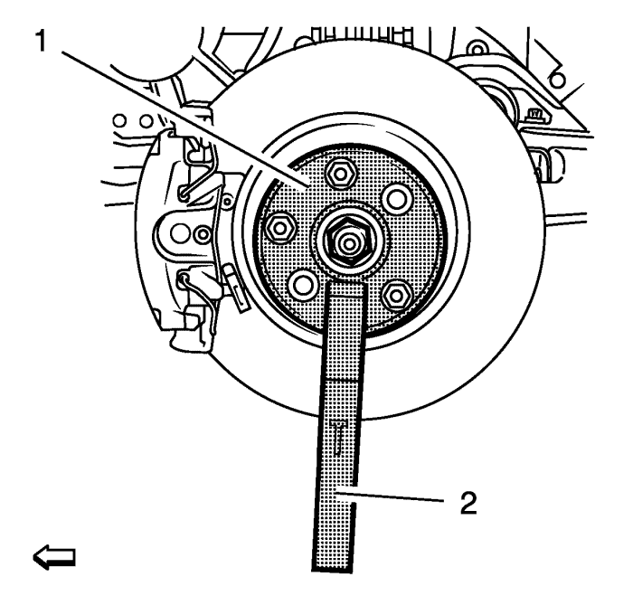
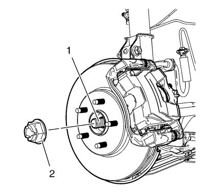
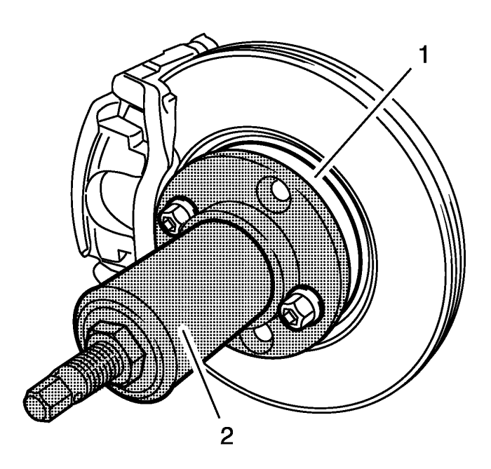

Sustitución del conjunto del árbol intermedio y del árbol impulsor de la rueda delantera - Lateral derecho -- 1.7 L Diésel
Herramientas especiales
| • | CH-49376 Llave de retención |
| • | CH-49400 Extractor de husillo de cubo |
| • | DT-6332 Protector de juntas |
Si desea informarse sobre herramientas regionales equivalentes, consultar Herramientas especiales .
Procedimiento de desmontaje
Advertencia : Para evitar lesiones personales y/o daños en los componentes, no permita que el peso del vehículo descanse sobre las ruedas delanteras ni intente operar el vehículo cuando se hayan extraído la(s) tuerca(s) de árbol de accionamiento de las ruedas o el (los) árbol(es) de accionamiento de las ruedas. Hacerlo puede hacer que se separe la pista interior del cojinete, dañando con ello los componentes de freno y suspensión y provocando la pérdida de control del vehículo.
Atención: Los sellos, las grapas y los fuelles del árbol de accionamiento de las ruedas deben protegerse contra objetos afilados al realizar trabajos en los árboles impulsores de las ruedas o cerca de éstos. Si se dañan fuelles, sellos o grapas, puede producirse una fuga de lubricante de la unión y producir un aumento del ruido y un posible fallo del árbol impulsor de la rueda.
- Elevar el vehículo y soportarlo de manera adecuada. Consultar Elevación del vehículo con un gato .
- Desmonte la rueda del vehículo. Consultar Desmontaje y montaje de la rueda y el neumático .

- Utilizando la llave CH-49376 (1) con la extensión EN-956-1 (2).

- Desmonte y DESECHE la tuerca del árbol de accionamiento de ruedas (2) del árbol de accionamiento de ruedas (1).

- Utilizando el extractor CH-49400 (2), separe el rotor de frenos y el conjunto de cojinete/cubo de rueda (1).
- Retire de la mangueta el conjunto de barra de dirección exterior. Consultar Sustitución la barra de acoplamiento exterior del varillaje de la dirección .
- Separar la rótula de la mangueta. Consultar Sustitución del brazo de apoyo inferior .
- Retire los 3 tornillos (1) de la brida intermedia.
- Retire el conjunto del árbol intermedio (2) y el árbol de accionamiento de las ruedas del soporte.
- Sustituya la articulación interior y el fuelle, si procede. Consulte Sustitución del fuelle y la la articulación interior del árbol impulsor de la rueda delantera , o bien deseche todo el conjunto.
Procedimiento de montaje
Nota: No es posible montar el cojinete del árbol intermedio después de realizar la unión.
- Sustituya el cojinete del árbol intermedio Consultar Sustitución del cojinete del árbol intermedio de accionamiento de las ruedas delanteras .

- Sustituya el anillo de seguridad (1).
- Sustituya la junta tórica (2).
- Limpie las superficies de contacto del árbol intermedio y del semieje con disolvente.
- Aplique Loctite 262 sólo en el semieje, en la posición que se indica (1). El envase y el pincel no deben contener metal si se han utilizado más de una vez.
- Ensamble el árbol de accionamiento y el árbol intermedio.
El proceso de unión requiere 12 horas a temperatura ambiente. Deje reposar la unión antes de volver a instalarlo en el vehículo y después de su instalación. El vehículo no debe conducirse ni moverse durante el período de reposo de la unión. El coche finalizado puede empujarse a una plaza de estacionamiento (para que repose).

- Monte el protector DT-6332 en la junta del árbol de salida del diferencial.
- Monte cuidadosamente el conjunto del árbol intermedio (2) en el diferencial hasta que las estrías estén más allá del protector DT-6332
- Desmonte el protector DT-6332 de la junta del árbol de salida del diferencial. Monte el conjunto del árbol intermedio (2) en el diferencial hasta que encaje completamente.
Precaución: Consulte Precaución con las fijaciones en la sección Prólogo
- Monte los 3 tornillos en la brida intermedia y apriételos hasta 22 N·m (16 lib. pie).
- Monte el árbol de accionamiento de las ruedas delanteras en el conjunto cojinete/cubo de las ruedas delanteras.
- Monte la rótula en la mangueta. Consultar Sustitución del brazo de apoyo inferior .
- Monte en la mangueta el conjunto de barra de dirección exterior. Consultar Sustitución la barra de acoplamiento exterior del varillaje de la dirección .
Advertencia: Consulte Aviso del ajustador de par de apriete a rendimiento en la sección Prólogo.
- Monte la NUEVA tuerca de árbol de accionamiento de ruedas (2) en el árbol de accionamiento de ruedas (1) en tres pasadas.
- Utilizando la llave CH-49376 (1) con la extensión EN-956-1 (2).
| • | Utilizando una llave dinamométrica y una base del tamaño adecuado (1), apriete la tuerca (2) del árbol de accionamiento de ruedas a 150 N·m 111 (lib. pie). |
| • | Suelte la tuerca del árbol de accionamiento de ruedas (2) a 45°. |
| • | Vuelva a apretar la tuerca del árbol de accionamiento de ruedas (2) a 250 N·m 184 (lib. pie). |
- Monte el conjunto de neumático y llanta. Consultar Desmontaje y montaje de la rueda y el neumático .
- Bajar el vehículo.
- Compruebe el nivel de aceite de la caja de cambios. Consultar Inspección del nivel del aceite del cambio .
| © Copyright Chevrolet. All rights reserved |